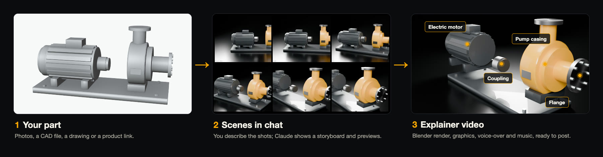
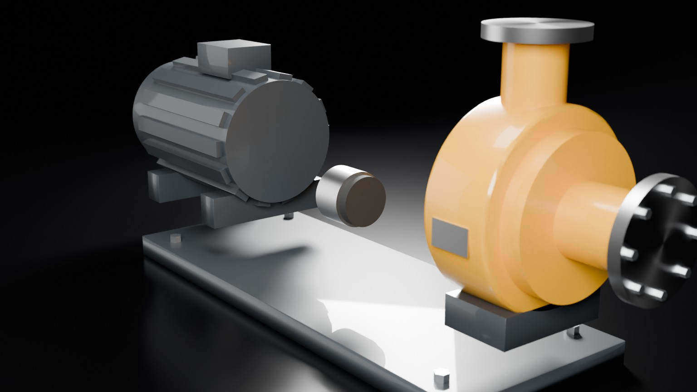
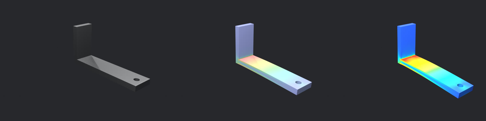
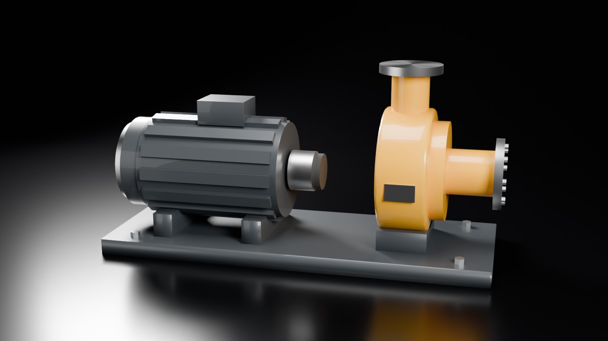
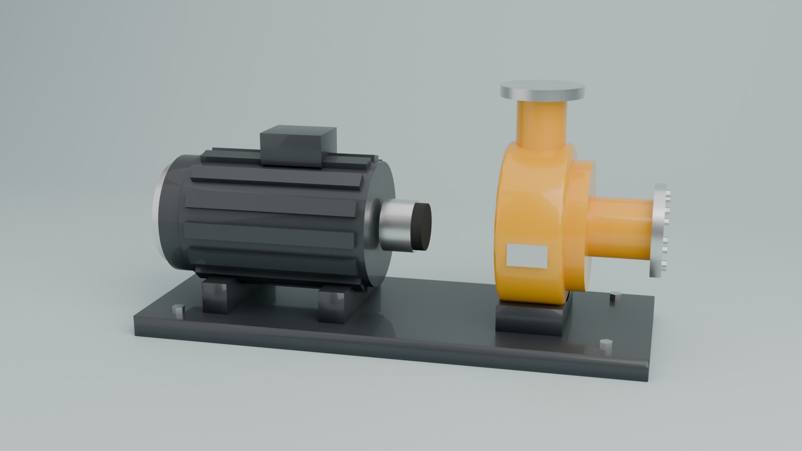
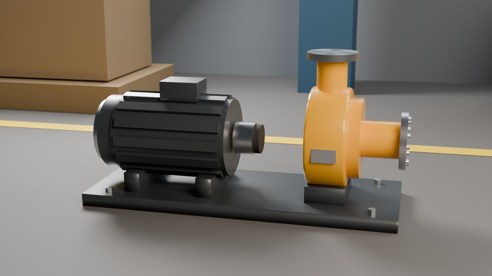

Got a machine or a mechanical part? Give Claude Code photos, a STEP or CAD file, a DWG or a drawing, and get an explainer video made with the power of Blender, in a few simple steps. It is all vibe coding: you chat, Claude drives Blender. No Blender or CAD skills needed.
Hai una macchina o un pezzo meccanico? Dai a Claude Code foto, uno STEP o un file CAD, un DWG o un disegno, e ottieni un video explainer fatto con la potenza di Blender, in pochi passi semplici. Tutto in vibe coding: tu parli, Claude guida Blender. Senza conoscere Blender o il CAD.
From your part to a video, in three stepsDal tuo pezzo al video, in tre passi
You bring what you have. Claude asks the right questions, builds the 3D model, sets up the scenes and shows you a storyboard before anything long is rendered.
Porti quello che hai. Claude fa le domande giuste, costruisce il modello 3D, imposta le scene e ti mostra uno storyboard prima di qualsiasi render lungo.

Start from what you haveParti da quello che hai
STEP and CADSTEP e CADOpened directly, real scale, parts kept separate for exploded views.Aperti direttamente, in scala reale, con le parti separate per gli esplosi.
DWG, SVG, drawingsDWG, SVG, disegni2D profiles read at real scale; dimensioned drawings rebuilt in parametric CAD.Profili 2D letti in scala reale; disegni quotati ricostruiti in CAD parametrico.
PhotosFotoModelled from your shots plus one real measurement. The slowest route, and Claude says so.Modellato dalle tue foto più una misura reale. La strada più lenta, e Claude te lo dice.
A product pageUna pagina prodottoPhotos, data sheets and brand colours read from the link.Foto, schede tecniche e colori del brand letti dal link.
What a real camera can't showQuello che una ripresa vera non può mostrare
Open the machine up, take it apart in mid-air, swap its finish in a click. Shots that would be impossible, or very expensive, with real footage.
Apri la macchina, smontala a mezz'aria, cambia finitura con un clic. Inquadrature impossibili, o molto costose, con riprese reali.
CutawaysSezioni See inside: rotor, shaft, impeller, section faces in colour.Vedi dentro: rotore, albero, girante, facce di sezione colorate.

Exploded viewsEsplosi Parts slide apart and back together, in order.I pezzi si separano e si rimontano, in ordine.Realistic materials and texturesMateriali e texture realistici Paint in the real RAL colour, brushed steel, rubber, zinc-plated bolts.Vernice nel colore RAL reale, acciaio spazzolato, gomma, bulloni zincati.
Camera work that tells a storyRiprese che raccontano
Not a list of views: a story, with classic establishing shots and, every two or three scenes, a shot that looks impossible or made with a motion-control rig.
Non una lista di viste ma un racconto, con le riprese classiche di presentazione e, ogni due o tre scene, una ripresa che sembra impossibile o fatta con un braccio robotico.
Narrative and shot sizesRacconto e pianiA shot list before the first scene: hook, the whole machine, inside, the key number, the logo. LS, MS, MCU, CU, ECU and POV alternate, never two alike in a row.Una scaletta prima della prima scena: aggancio, la macchina intera, il dentro, il numero chiave, il logo. LS, MS, MCU, CU, ECU e POV si alternano, mai due uguali di fila.
Slow-mo and speed rampsSlow-mo e speed rampA key instant stretched to slow motion, then a sudden rush. In 3D it costs nothing: time is remapped, not reshot.Un istante chiave allungato in slow motion, poi un'accelerazione improvvisa. In 3D non costa niente: si rimappa il tempo, non si rigira.
Follow and POVFollow e POVThe camera rides the conveyor, slips through a gap, follows the fluid down the pipe.La camera viaggia sul nastro, passa da una fessura, segue il fluido nel tubo.
Robotic-arm movesMovimenti da braccio roboticoLong precise paths that skim the parts, stop dead on a detail and take off again.Traiettorie lunghe e precise che sfiorano le parti, si fermano di colpo su un dettaglio e ripartono.
Counter-movementContromovimentoThe camera orbits against the machine's rotation, so the motion feels doubled.La camera gira in senso opposto alla rotazione della macchina, così il movimento sembra doppio.
Exploded to cutaway, no cutDa esploso a sezione, senza stacchiOne continuous shot: parts fly apart, then the section opens as the camera moves in.Un'unica ripresa: i pezzi si separano, poi la sezione si apre mentre la camera entra.
Show the engineeringMostra l'ingegneria
Optional, with text-to-cad. A real stress analysis becomes a shot: the part bends under load (exaggerated, and the video says so) while it turns from metal to blue, then red where it yields. Load, material and safety factor come from the client and go on screen.
Facoltativo, con text-to-cad. Un calcolo di resistenza vero diventa una ripresa: il pezzo si piega sotto carico (in modo esagerato, e il video lo dice) mentre passa dal metallo al blu, poi al rosso dove cede. Carico, materiale e coefficiente di sicurezza li dà il cliente e vanno a schermo.

Test bracket, S235 steel, 800 N on the tip: it yields at the corner (safety factor 0.66).Staffa di prova, acciaio S235, 800 N sulla punta: cede nell'angolo (coefficiente di sicurezza 0,66).
Technical drawingTavola tecnicaA dimensioned PDF made from the model, which can dissolve into the 3D part on screen, and is delivered with the video.Un PDF quotato fatto dal modello, che a schermo può dissolversi nel pezzo 3D, e si consegna con il video.
Real standard partsParti normalizzate vereScrews, bearings, gears and flanges at true ISO sizes, so cutaways show real components, not invented shapes.Viti, cuscinetti, ingranaggi e flange a misura ISO vera, così le sezioni mostrano componenti reali e non forme inventate.
Bigger than the studio: AI extrasOltre lo studio: extra AI
Optional, with the Higgsfield MCP and only after you OK the credits. Blender stays the base; AI goes where it adds scale and wow without touching the product.
Facoltativo, con Higgsfield MCP e solo dopo il tuo ok sui crediti. La base resta Blender; l'AI va dove aggiunge scala ed effetto senza toccare il prodotto.
The part in its worldIl pezzo nel suo mondoThe factory, the whole line, the site that uses it: the world is generated, the real Blender product is composited on top.La fabbrica, la linea intera, il cantiere che lo usa: il mondo è generato, il prodotto vero di Blender va sopra.
PeoplePersoneAn operator at the machine, hands fitting a part, grown from a Blender frame.Un operatore alla macchina, mani che montano un pezzo, partendo da un frame Blender.
Spectacular graphicsGrafiche spettacolariEnergy flows, particles, transitions and title backgrounds from AI; exact text and numbers from HyperFrames on top.Flussi, particelle, transizioni e sfondi dei titoli dall'AI; testi e numeri esatti da HyperFrames sopra.
Upscale and formatsUpscale e formatiRender smaller and upscale, or turn 16:9 into 9:16 without rendering again.Render più piccolo e poi upscale, o da 16:9 a 9:16 senza ri-renderizzare.
Never on cutaways, exploded views, calculations, dimensions or logos: there, only real geometry and real numbers.Mai su sezioni, esplosi, calcoli, quote o loghi: lì servono solo la geometria vera e i numeri veri.
Any setting, realistic lightQualsiasi ambiente, luce realistica
In the brief you choose where the product sits and the mood, even from a reference photo. Every image is made with the skill's scripts.
Nel brief scegli dove mettere il prodotto e con che atmosfera, anche partendo da una foto di riferimento. Tutte le immagini sono generate con gli script della skill.

Black studioStudio nero

Limbo

WarehouseCapannone
A storyboard in secondsStoryboard in pochi secondi
Before every animated preview, one frame for each second of the scene, the last one included. Then the preview at 24, 12 or 6 fps, your choice.
Prima di ogni anteprima animata, un frame per ogni secondo della scena, compreso l'ultimo. Poi l'anteprima a 24, 12 o 6 fps, a scelta.
A phased workflow, with questions and approvalsUn percorso a fasi, con domande e approvazioni
At every phase the skill asks what it needs and stops for your ok. Decisions live in progetto.md, so you can pick the work up whenever you like. The skill speaks Italian.
A ogni fase la skill chiede cosa serve e si ferma per un ok. Le decisioni restano in progetto.md, così puoi riprendere il lavoro quando vuoi.
0BriefFormat, length, setting and mood, story arc, palette; optional calculations and drawings.
1The productReal-scale model from STEP, DWG, drawings or photos; materials and setting.
2The scenesShot list with alternating shot sizes and spectacular moves; storyboard and preview.
3EditAll scenes in a single preview.
4GraphicsTitles, callouts, dimensions and subtitles in HyperFrames, optionally over AI effects. In 9:16 it keeps important text inside the Reels, Stories and TikTok safe zones.
5AudioVoice, music and effects with ElevenLabs; scenes fitted to the voice.
6Full reviewThe complete draft video, for approval.
7Final renderCycles on Metal GPU, with a time estimate.
8Touch-upsOnly the changed frames are redone.
9DeliveryMaster at −14 LUFS, light version, subtitles; optional drawing PDF and interactive 3D page.
0BriefFormato, durata, ambiente e atmosfera, arco del racconto, palette; calcoli e tavole facoltativi.
1Il pezzoModello in scala reale da STEP, DWG, disegni o foto; materiali e ambientazione.
2Le sceneScaletta con piani alternati e riprese spettacolari; storyboard e anteprima.
3MontaggioTutte le scene in un'anteprima unica.
4GraficheTitoli, callout, misure e sottotitoli in HyperFrames, anche sopra effetti AI. Nel 9:16 tiene i testi importanti dentro le zone sicure di Reels, Stories e TikTok.
5AudioVoce, musica ed effetti con ElevenLabs; scene adattate alla voce.
6Visione d'insiemeIl video completo in bozza, da approvare.
7Render finaleCycles su GPU Metal, con stima dei tempi.
8RitocchiSi rifanno solo i frame cambiati.
9ConsegnaMaster a −14 LUFS, versione leggera, sottotitoli; tavola PDF e pagina 3D interattiva facoltative.
InstallInstallazione
macOS on Apple Silicon. Every command is here, with a copy button: nothing to look up elsewhere. Install the skill and the required tools, then add what your project needs.
macOS con Apple Silicon. Tutti i comandi sono qui, con un pulsante per copiarli: non serve cercare altrove. Installa la skill e le dipendenze necessarie, poi aggiungi quello che serve al tuo progetto.
Restart Claude Code: the skill turns on by itself when you ask for a 3D product video.Riavvia Claude Code: la skill si attiva da sola quando chiedi un video 3D di un prodotto.
2. What do you need?2. Cosa ti serve?
You want…Vuoi…
InstallInstalla
A quick look, a storyboardUna prova veloce, uno storyboard
the required setle necessarie
A finished video with text and voiceUn video finito con testi e voce
+ HyperFrames, ElevenLabs
Leaner, faster code from ClaudeCodice più snello e veloce da Claude
+ Ponytail
You have a STEP, a drawing or a sketchHai uno STEP, un disegno o uno schizzo
+ text-to-cad
You have an AutoCAD DWGHai un DWG di AutoCAD
+ LibreDWG
You start from a product web pageParti dalla pagina web del prodotto
+ Firecrawl
Show strength or a technical drawingMostrare la resistenza o una tavola
+ text-to-cad
Factory, world, people, flashier graphicsFabbrica, mondo, persone, grafiche più spettacolari
+ Higgsfield
Also an interactive 3D pageAnche una pagina 3D interattiva
What it doesCosa faThe assistant you talk to. It reads the skill and drives Blender, FFmpeg and the other tools for you.L'assistente con cui parli. Legge la skill e guida al posto tuo Blender, FFmpeg e gli altri strumenti.
WhenQuando serveAlways: every phase runs through it.Sempre: ogni fase passa da qui.
What it doesCosa faBuilds the 3D model, materials, scenes and the final Cycles render on the Metal GPU.Costruisce modello 3D, materiali, scene e il render finale Cycles su GPU Metal.
WhenQuando serveAlways, from phase 1 to 8. It must sit in /Applications, or set the BLENDER variable to its path.Sempre, dalla fase 1 alla 8. Deve stare in /Applications, oppure imposta la variabile BLENDER con il suo percorso.
What it doesCosa faLets Claude look inside the open Blender file and change it live: objects, materials, cameras.Permette a Claude di guardare dentro il file Blender aperto e modificarlo dal vivo: oggetti, materiali, camere.
WhenQuando serveWhen you work with Blender open (scenes, fixes). Headless renders do not need it. Two parts: the server, then the add-on inside Blender.Quando lavori con Blender aperto (scene, correzioni). I render in background non ne hanno bisogno. Due parti: il server, poi l'add-on dentro Blender.
brew install uv
git clone https://projects.blender.org/lab/blender_mcp.git ~/blender_mcp
claude mcp add blender -- uv --directory ~/blender_mcp/mcp run blender-mcp
Then in Blender: Edit → Preferences → Get Extensions → Install from Disk and pick the zip.Poi in Blender: Edit → Preferences → Get Extensions → Install from Disk e scegli lo zip.
What it doesCosa faTurns frames into previews, joins the scenes, mixes audio and writes the delivery files.Trasforma i frame in anteprime, unisce le scene, mixa l'audio e scrive i file di consegna.
WhenQuando serveAlways: storyboard, previews, edit and delivery.Sempre: storyboard, anteprime, montaggio e consegna.
What it doesCosa faExpert know-how Claude reads on demand: materials, lighting, lookdev, camera work, modelling.Competenze che Claude legge al bisogno: materiali, luci, lookdev, camera, modellazione.
WhenQuando servePhases 1 and 2, whenever a material, a light or a camera move has to look professional.Fasi 1 e 2, ogni volta che un materiale, una luce o un movimento di camera deve sembrare professionale.
What it doesCosa faDraws titles, callouts, measurements, counters, subtitles and the end logo over the render, in your palette, with exact text.Disegna sopra il render titoli, callout, misure, contatori, sottotitoli e il logo finale, nella tua palette e con il testo esatto.
WhenQuando servePhase 4. Skip it only for a video with no text at all.Fase 4. Saltalo solo per un video senza nessun testo.
brew install node
claude plugin marketplace add heygen-com/hyperframes
claude plugin install hyperframes@hyperframes
What it doesCosa faVoice-over, music and sound effects. The skill then stretches the scenes to fit the voice.Voce fuori campo, musica ed effetti sonori. Poi la skill allunga le scene per seguire la voce.
WhenQuando servePhase 5, if the video has sound. Needs an ElevenLabs account with credits; every generation is asked first.Fase 5, se il video ha l'audio. Serve un account ElevenLabs con crediti; ogni generazione viene chiesta prima.
claude mcp add --transport http elevenlabs https://api.elevenlabs.io/v1/mcp
Then type /mcp in Claude Code and sign in.Poi scrivi /mcp in Claude Code e accedi.
What it doesCosa faMakes Claude write the shortest code that works and reuse the skill's scripts first: fewer tokens, fewer bugs, faster previews to redo. /ponytail-review checks the project's scripts.Fa scrivere a Claude il codice più corto che funziona e riusare prima gli script della skill: meno token, meno errori, anteprime più veloci da rifare. /ponytail-review controlla gli script del progetto.
WhenQuando serveEvery phase where Claude writes scripts (scenes, patches, CAD, graphics), and a review before the final render: a bug caught there saves hours of GPU.In ogni fase in cui Claude scrive script (scene, patch, CAD, grafiche), più un controllo prima del render finale: un errore trovato lì fa risparmiare ore di GPU.
claude plugin marketplace add DietrichGebert/ponytail
claude plugin install ponytail@ponytail
5. Optional, by use5. Facoltative, in base all'uso
What it doesCosa faOpens STEP files (parts kept separate, real scale); models parts in parametric CAD with build123d; adds real ISO screws, bearings, gears and flanges from bd_warehouse; runs stress analyses and makes dimensioned drawings.Apre gli STEP (parti separate, scala reale); modella i pezzi in CAD parametrico con build123d; aggiunge viti, cuscinetti, ingranaggi e flange ISO veri da bd_warehouse; fa calcoli di resistenza e tavole quotate.
WhenQuando serveYou have a STEP file · you start from a drawing or a sketch · a cutaway needs real internals · you want to show how much a part holds or a technical drawing in the video. build123d and bd_warehouse come with it.Hai un file STEP · parti da un disegno o uno schizzo · una sezione ha bisogno di interni veri · vuoi mostrare quanto regge un pezzo o una tavola tecnica nel video. build123d e bd_warehouse arrivano con lui.
What it doesCosa faReads AutoCAD DWG drawings (2D lines, arcs, polylines) at real scale.Legge i disegni DWG di AutoCAD (linee, archi, polilinee 2D) in scala reale.
WhenQuando serveOnly when your source is a .dwg. Dimensions and text are not read; 3D DWGs need a STEP instead.Solo se la sorgente è un .dwg. Quote e testi non vengono letti; per i DWG 3D serve uno STEP.
What it doesCosa faReads product pages and data sheets, and pulls the brand palette from a website.Legge pagine prodotto e schede tecniche, e ricava la palette del brand da un sito.
WhenQuando serveYou start from a link, or want the infographic colours taken from the client's site. Without it Claude uses the built-in browser.Parti da un link, o vuoi i colori delle infografiche presi dal sito del cliente. Senza, Claude usa il browser integrato.
claude mcp add --transport http firecrawl https://mcp.firecrawl.dev/v2/mcp-oauth
What it doesCosa faGenerative AI on top of Blender: the part inside its factory or a bigger world (AI world, real Blender product composited on top), people at the machine, spectacular effects and transitions under exact HyperFrames text, upscale, new aspect ratios.AI generativa sopra Blender: il pezzo dentro la fabbrica o in un mondo più grande (mondo AI, prodotto vero da Blender sopra), persone alla macchina, effetti e transizioni spettacolari sotto il testo esatto di HyperFrames, upscale, nuovi formati.
WhenQuando serveSocial and launch videos that need scale and wow. Never on cutaways, exploded views, calculations, dimensions or logos. Uses credits, asked first.Video social e di lancio che hanno bisogno di scala e di effetto. Mai su sezioni, esplosi, calcoli, quote o loghi. Usa crediti, chiesti prima.
claude mcp add --transport http higgsfield https://mcp.higgsfield.ai/mcp
What it doesCosa faBuilds an interactive 3D web page of the product: exploded view, section, working numbers.Crea una pagina web 3D interattiva del prodotto: esploso, sezione, numeri di funzionamento.
WhenQuando serveOnly if you also want a page for the website or a trade-fair screen, delivered next to the video.Solo se vuoi anche una pagina per il sito o per uno schermo in fiera, consegnata accanto al video.
git clone https://github.com/AirsupHQ/machine-skill.git ~/.claude/skills/machine
cd ~/.claude/skills/machine && npm i -D playwright && npx playwright install chromium
What it doesCosa faFast alternative without Blender: rebuilds the machine in three.js and records a tour video in minutes, or makes an interactive page. Shapes are approximate.Alternativa veloce senza Blender: ricostruisce la macchina in three.js e registra un video del tour in pochi minuti, o crea una pagina interattiva. Le forme sono approssimate.
WhenQuando serveA quick “how it works” video or a pitch, where the real product’s fidelity doesn’t matter.Un video veloce di “come funziona” o un pitch, dove la fedeltà al prodotto vero non conta.
npx skills add elvarofficial/teardown -g -a claude-code
Then, once, in the installed folder: npm install && npx playwright install chromium.Poi, una volta, nella cartella installata: npm install && npx playwright install chromium.
6. Quick check6. Verifica rapida
/Applications/Blender.app/Contents/MacOS/Blender --version
ffmpeg -version | head -1
node -v
claude mcp list